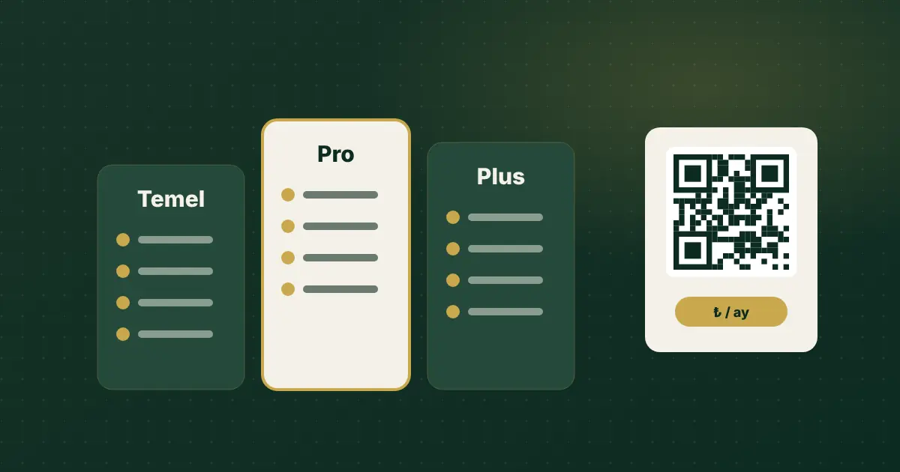

QR Menü Fiyatları: Ücret Neye Göre Değişir, Neyi Karşılaştırmalı?
İki QR menü teklifinin fiyatı yakın görünse de içerdikleri çok farklı olabilir. Doğru karşılaştırma, fiyattan önce neyin dahil olduğuna bakmaktır.

Kısa cevap
QR menü fiyatı, sistemin yalnızca menü mü yoksa sipariş, garson çağrısı ve analitik gibi servis özellikleri de mi sunduğuna, ödeme modeline (aylık ya da yıllık) ve kurulum, çoklu dil ve destek gibi kalemlerin dahil olup olmadığına göre değişir. Teklifleri karşılaştırırken aylık ücret kadar neyin dahil olduğuna bakın.
Fiyatlar neden bu kadar farklı?
"QR menü" adı altında çok farklı ürünler satılır. Bir ucunda bir PDF'i karekoda bağlayan basit hizmetler, diğer ucunda masadan sipariş, garson çağrısı, servis ekranı ve analitik sunan sistemler vardır. Fiyat farkı da çoğu zaman bu kapsam farkından gelir.
Fiyatı belirleyen başlıca kalemler
Kapsam: yalnızca menü mü, servis de mi?
Yalnızca menü gösteren bir sistemle, masadan gelen sipariş ve çağrıları bir servis paneline düşüren sistem aynı şey değildir. İkincisi işletmenin servis akışının parçası olur ve daha fazla özellik içerir.
Ödeme modeli
Çoğu sistem aylık abonelikle çalışır; yıllık ödemede indirim sunulabilir. Tek seferlik ödeme modellerinde güncelleme ve destek kapsamını ayrıca sorun.
Çoklu dil
Turist misafiri olan işletmeler için önemlidir. Bazı sistemlerde ek ücretlidir; çevirinin nasıl girildiğini (elle, dosyayla, otomatik) de sorun.
Kurulum ve menü girişi
Menünün sisteme kimin tarafından girileceği, toplu aktarma (ör. CSV) olup olmadığı ve fotoğrafların nasıl ekleneceği, gizli bir iş yükü ya da ek maliyet olabilir.
Karekod baskısı
Karekodların masa kartı, stand ya da etiket olarak basılması genellikle ayrı bir maliyettir. Masa bazlı kod gerekiyorsa masa sayınız baskı maliyetini belirler.
Ödeme alma
Sistem online ödeme alıyorsa, abonelik dışında işlem başına komisyon olabilir. Ödeme almayan sistemlerde bu kalem yoktur.
Teklif karşılaştırırken sorulacak sorular
- Fiyat aylık mı, yıllık mı? KDV dahil mi?
- Ürün ve kategori sayısında sınır var mı?
- Fiyatı ve ürünü kendim mi güncelliyorum, yoksa talep mi açıyorum?
- Çoklu dil, alerjen ve filtre dahil mi?
- Masa bazlı karekod var mı? Garson çağrısı ve sipariş hangi pakette?
- Sistem ödeme alıyor mu? Alıyorsa komisyon ne kadar?
- Aboneliği bırakırsam menü verilerimi dışa aktarabilir miyim?
- Destek hangi kanaldan ve hangi saatlerde?
QR Menu Official paketleri
Şeffaflık için kendi fiyatlarımızı da yazıyoruz. Kasım 2026 itibarıyla aylık fiyatlar şöyledir; güncel fiyat ve paket içeriği için her zaman paketler sayfasını esas alın.
| Paket | Aylık | Kimin için | Öne çıkanlar |
|---|---|---|---|
| Temel | 749 TL | Menüsünü dijitalleştirmek isteyen işletmeler | Dijital QR menü, panelden ürün ve fiyat yönetimi, CSV aktarma, porsiyon ve ekstra, rozetler, kampanya ve kombo, akıllı filtreleme, çoklu dil, QR masa |
| Pro | 1.490 TL | Masa ve servis akışını düzenlemek isteyen işletmeler | Temel'e ek olarak QR ile sipariş, servis paneli, garson çağrısı, hesap talebi, personel rolleri, masa oturum güvenliği, açılış ekranı |
| Plus | 2.990 TL | Menüsünü veriyle yönetmek isteyen işletmeler | Pro'ya ek olarak menü analitiği, yorum ve geri bildirim, maliyet ve reçete, menü mühendisliği, menü asistanı |
Yıllık ödemede 12 ay kullanım için 10 aylık ücret ödenir. Sistem online ödeme almaz; sipariş ve hesap talepleri servis paneline iletilir, ödeme işletmenin kendi yöntemiyle alınır.
Hangi paket size uygun?
- Yalnızca menünüzü dijitalleştirmek istiyorsanız ve garson çağrısı ya da masadan sipariş gerekmiyorsa Temel yeterlidir.
- Garson az, masa çoksa ve çağrıların, siparişlerin bir ekranda toplanmasını istiyorsanız Pro'ya bakın.
- Hangi ürünün kâr getirdiğini ve misafirin menüde ne aradığını görmek istiyorsanız Plus'taki analitik ve menü mühendisliği işinize yarar.
Paketleri yan yana karşılaştırın. Her özelliğin hangi pakette olduğu tek tabloda.
Paketleri İnceleSık sorulan sorular
QR menü fiyatları ne kadar?
Kapsama göre değişir. Yalnızca menü gösteren sistemler ile sipariş, garson çağrısı ve analitik sunan sistemler arasında belirgin fiyat farkı vardır. QR Menu Official'da Kasım 2026 itibarıyla aylık fiyatlar Temel 749 TL, Pro 1.490 TL ve Plus 2.990 TL'dir.
Yıllık ödemede indirim var mı?
QR Menu Official'da yıllık ödemede 12 ay kullanım için 10 aylık ücret ödenir.
QR menü sistemi ödeme alır mı?
Sisteme göre değişir. QR Menu Official ödeme almaz; sipariş ve hesap talepleri servis paneline iletilir.
Karekod baskısı fiyata dahil mi?
Çoğu sistemde baskı ayrı bir maliyettir. QR Menu Official'da karekodları panelden PNG ya da PDF olarak indirip istediğiniz matbaada bastırabilirsiniz.
Teklif karşılaştırırken en çok neye dikkat etmeliyim?
Aylık ücretten önce kapsamı karşılaştırın: güncellemeyi kendiniz yapıp yapamadığınız, çoklu dil, masa bazlı kod, sipariş ve garson çağrısı, veri dışa aktarma ve destek.
Kaynaklar
Son kontrol: 6 Kasım 2026. Yazıda yer alan ürün özellikleri QR Menu Official'ın mevcut paket içeriğiyle sınırlıdır.